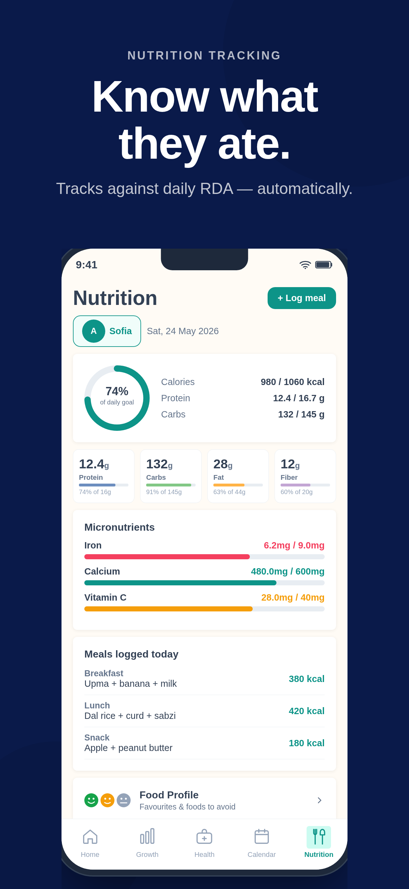
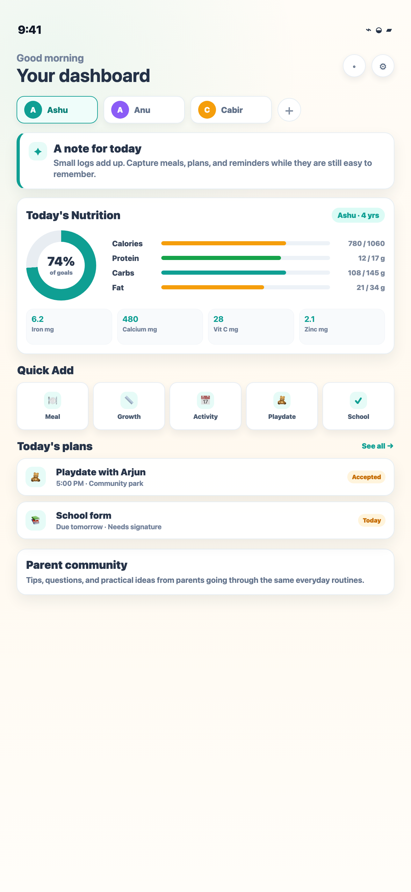

Nutrition against child-specific targets
Track calories, macros, iron, calcium, vitamin C, zinc, and fiber against age-aware RDA targets.
Built for parents
Parentchime brings nutrition, supplements, health records, growth, school reminders, and co-parent coordination into one calm place.
Launching soon. Join the early parent list for updates.


What parents get
Track calories, macros, iron, calcium, vitamin C, zinc, and fiber against age-aware RDA targets.
Save a supplement once, reuse it next time, and count the nutrient contribution in the daily total.
Keep medicines, allergies, vaccines, visits, and follow-ups together for the child.
Record tests, materials to buy, tasks, events, and reminders before they become last-minute chaos.
Track extracurricular activities, create playdates, reminders, and shared plans without scattered messages.
Find parent tips, questions, and lived advice from families navigating similar everyday routines.


Why tracking matters
Their needs change with age, growth spurts, school routines, picky eating phases, illness, and supplementation.
The adult-app gap
They optimize for adult macros, dieting, exercise, and personal weight management. That misses the parent workflow.
It connects age-aware nutrition targets, micronutrients, supplements, growth, vaccine history, allergies, school tasks, and shared family context.
Founder story
I built Parentchime from my own life as a mother, a working parent, and the default keeper of a hundred tiny details.
As a mother of two young children, I know that parenting is not just about loving your kids deeply. It is also about remembering a hundred tiny things every single day: what they ate, when the next vaccine is due, how much they have grown, which shoes suddenly don't fit, what the doctor said last time, when the school project is due, and which hobby class is happening today.
Like most Indian parents, I wanted to give my children the very best: the right nutrition, the right care, the right routines, and the right support for their physical, mental, and emotional growth. But as a working parent with very little family support, I often found myself juggling all of this between a busy work schedule, scattered WhatsApp messages with my husband, notes in different places, and those familiar height marks on the wall that every Indian home seems to have.
I also realised that most health and nutrition apps were designed for adults, while children have very different needs depending on their age, growth stage, and lifestyle. Parenting already carries enough pressure. Managing it should not feel like another full-time job.
That is why I decided to build this app: a simple, thoughtful tool to reduce the cognitive load of parenting. From nutrition and growth tracking to school, doctor visits, vaccines, activities, sizes, and schedules, everything can finally live in one place. And with parent co-login, it is no longer only Mom's job to remember everything. Dad has access too, exactly where and when he needs it.
This app comes from my own life, but it is built for every parent trying to do their best. Download the app today and join me in making parenting a little more organised, a little less stressful, and a tad bit easier.
Parentchime Pro
The Parentchime Pro plan is positioned as the layer that helps parents act: deeper nutrient insights, personalized food ideas, community guidance, faster logging, custom recipes, longer history, and smarter reminders.
Know which nutrients are met, almost there, or still missing before dinner.
See suggestions that help close the day's nutrient shortfalls.
Keep both parents aligned without relying on one person's memory.
Ask questions, share wins, and get practical support from other parents.
Save homemade meals once, then log repeat portions quickly and consistently.
Capture a meal photo to make nutrition logging easier on busy days.
Track iron, calcium, vitamin C, zinc, and other small nutrients that matter.